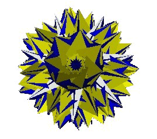
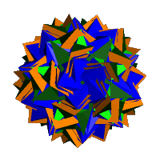

 
Note: To view the 3D
VRML files you will need a browser add-on.
HEDRON: Polyhedron generating software, now at V1.12, available here. Help text here. Hedron Tools (Release 2B).
Uniform Polyhedra: Displayed as 'switchable' VRML files, including Skilling's figure, including links to 'molecular' VRML files of all the uniform Polyhedra.
Johnson Solids: More 'switchable' VRML files, plus some isomorphs to the Johnson Solids.
Rhombohedra: Polyhedra containing rhombic faces:
Isohedral Deltahedra: Face transitive polyhedra consisting of equilateral triangles.
Elementary Honeycombs: Vertex transitive space filling honeycombs with non-uniform cells.
Acrohedra: UPDATED Polyhedra with a specified vertex, n-n-3 acrons, n-4-3-3 acrons, some near misses (with 'Stress Maps') and tables of dihedral angles.
Petrie Expanded Polyhedra: Polyhedra that have been expanded across their Petrie Polygons
Convex Segmentochora: Dr Richard Klitzing's models of 4-dimensional figures confined to two hyper-planes. Includes VRML models of all figures.
Polyhedral 'Twisters': Animations of an unusual deformation between uniform polyhedra.
Tessellations of the Plane: Uniform polygonal tessellations of the plane and hyperbolic star tessellations.
Locally convex octahedral and icosahedral polyhedra: Locally convex polyhedra with high degrees of symmetry.
Locally Convex Prismatic Polyhedra: Commentary and models of
Chiral Prismatic Polyhedra: Commentary and models of
Cupolas and Semicupolas: Polyhedra based on the cupola with emphasis on the great rhombicosidodecahedron and the ditrigonary polyhedra.
Sphenocoronal Polyhedra: Families of prismatic polyhedra based on the
Edge Expanded Prismatic Polyhedra: Edge Expanded Biprisms and Bi-antiprisms. A generalisation of the 'spheno-prisms'.
Isomorphs of the Icosahedron: Polyhedra generated from an icosahedral net.
Isomorphs of the Rhombicuboctahedron: Polyhedra generated from a rhombicuboctahedral net, with animated VRMLs.
Phi in the Icosahedron and Dodecahedron: A simple method of generating vertex co-ordinates using the Golden Ratio
Miscellaneous
Polyhedra: Including models of the Stewart G3, the self
augmented heptagonal antiprism the Edshammar polyhedron and the associahedron
Near Misses: Polyhedra that are not quite regular, including near-misses to the Johnson Solids (the 'A-list') and acrohedral near misses amongst others.
This site is designed primarily to provide some form of ordered access to the many VRML models of polyhedra I have made over the past few years, mainly using my programme "HEDRON" (which I have made available). HEDRON was used to generate most of the models shown on this site.
I am not a professional mathematician, and as a consequence this site is as much a catalogue of models than a site providing any great mathematical insight. I have tried to be original in my modelling and I present here a large number of models that I have not seen elsewhere. Any VRML2 viewer should display the models. I recommend Parallel Graphics' Cortona, available here.
At times, I have modelled a polyhedron for which, to my knowledge, no formal name exists. In these cases I have tried to extend existing naming conventions. Where this is the case I have tried to make it clear. Any errors and omissions are mine.
No part of this site may be used for commercial purposes without the express permission of the author.
Any comments or questions regarding this site? Email me at: jimhedron@o........ (see the url of this page for the rest)
Jim McNeill
|